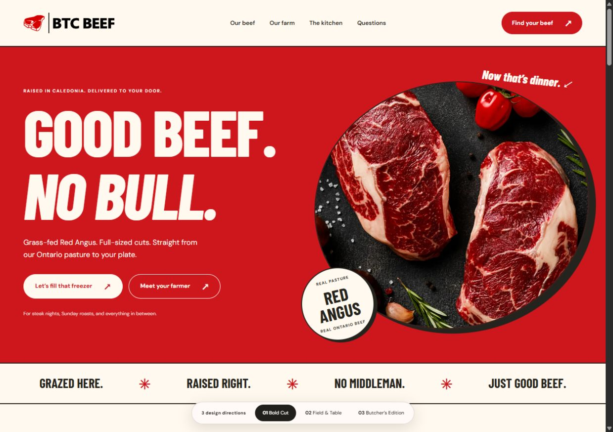
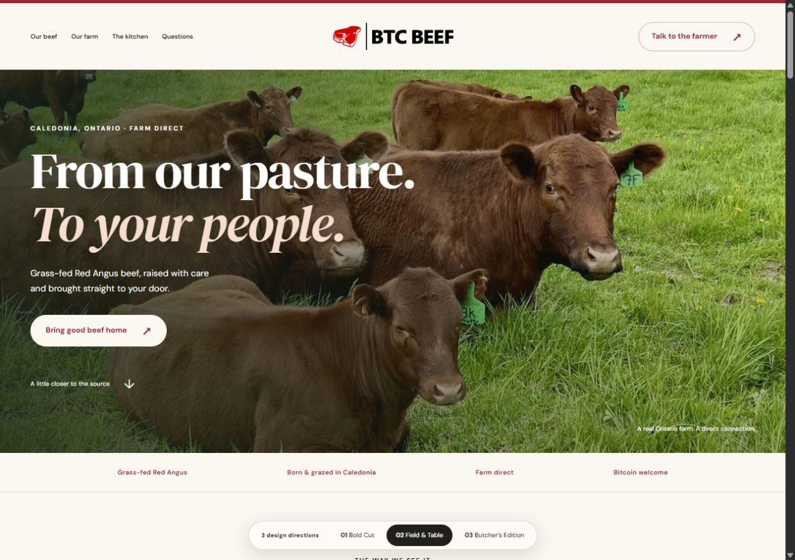
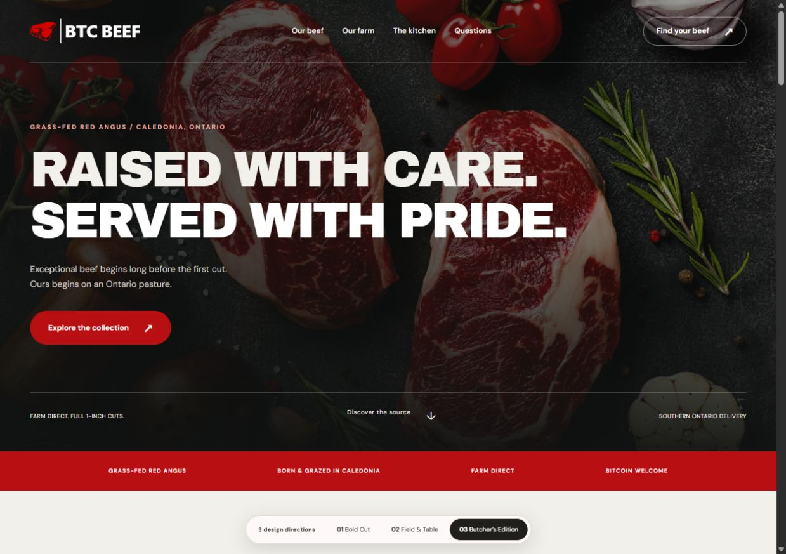

Explore designDirection 01
Bold Cut
Bold red, huge type, playful details. A confident food brand with a little attitude.
Open full homepageOne farm. Three different first impressions.
Three complete homepage directions, using your existing products, prices, and farm photography. Open each one and explore all the way down.
Bold Cut’s graphic personality meets a seamless photographic hero, lighter sections, and rounded rectangular buttons.
Open the refined design
Explore designDirection 01
Bold red, huge type, playful details. A confident food brand with a little attitude.
Open full homepage
Explore designDirection 02
Open landscapes, warm whites, and elegant serif type. The farm and the people come first.
Open full homepage
Explore designDirection 03
Dark photography, precise layouts, and strong typography. A premium butcher’s point of view.
Open full homepageEach preview includes beef options, the farm story, a cut explorer, recipes, FAQs, and a local enquiry demonstration. These are design previews; forms do not send enquiries.